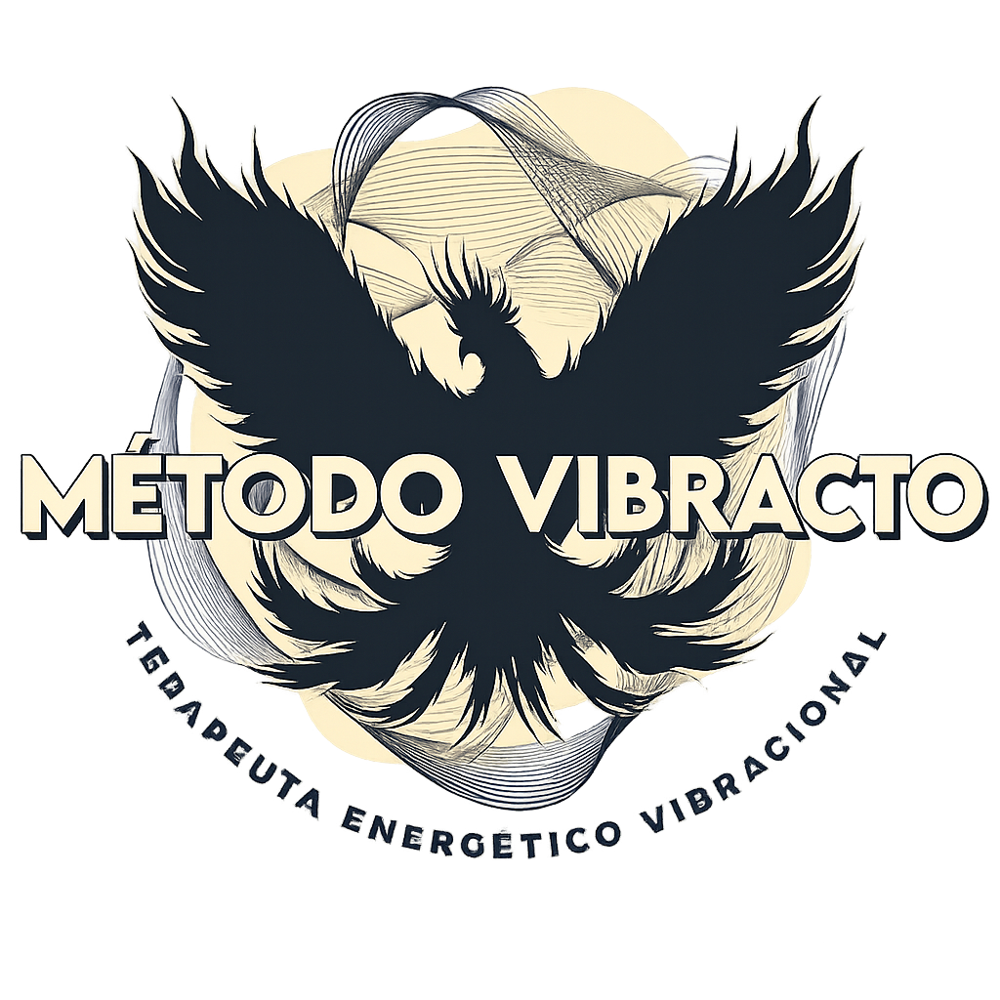

Você sente que faz de tudo para mudar, mas continua caindo nos mesmos ciclos?
Relacionamentos desgastantes, ansiedade constante e sensação de estagnação costumam ter raízes mais profundas do que aparentam. A Apometria Integrativa atua na causa para restabelecer seu equilíbrio.
Quero iniciar minha sessãoAtravés da Apometria Integrativa, o Método Vibracto ajuda a identificar e transformar bloqueios emocionais, energéticos e espirituais.
Promovendo mais equilíbrio, clareza e desenvolvimento pessoal.
🔓
Identifique e libere padrões que impedem seu crescimento pessoal.
🌱
Fortaleça sua capacidade de fazer escolhas mais conscientes.
⚖️
Desenvolva mais clareza emocional, foco e leveza para lidar com a vida.
Muitas vezes, não se trata de falta de esforço ou capacidade.
Bloqueios emocionais, energéticos e espirituais podem estar influenciando sua vida de maneira silenciosa.
A Apometria Integrativa é uma abordagem terapêutica integrativa que atua nos aspectos emocionais, energéticos e espirituais do ser humano, buscando compreender as causas profundas de padrões, bloqueios e desequilíbrios que podem influenciar diferentes áreas da vida.
Seu propósito é favorecer o autoconhecimento, promover a reorganização interna e ampliar a consciência, auxiliando cada pessoa a viver com mais equilíbrio, clareza e conexão com sua própria essência.
Sessão de Apometria a distância conforme seu momento.
Mapeamos padrões, influências e questões que podem estar impactando sua vida.
Harmonização emocional, energética e espiritual.
Você recebe o relatório de apometria com o que foi trabalhado no seu campo energético.
Histórias reais de pessoas que encontraram o equilíbrio através dos nossos atendimentos.
"A cada sessão de Apometria Integrativa, percebo o quanto tenho me libertado de padrões que antes limitavam minha vida. É um processo de transformação que me fortalece e me permite seguir em frente com mais consciência. Sou profundamente grata por essa ferramenta."
"Percebi mudanças na forma como lidava com situações que antes me causavam sofrimento. Passei a enxergar minha vida com mais clareza e tranquilidade."
"Passei a tomar decisões com mais clareza e confiança, o que refletiu positivamente na minha vida profissional."
"Tanta cura, tratamento e quebra de padrões... A cada sessão de Apometria eu me liberto mais. Eu amo este método!"
"Acredito que a transformação verdadeira só acontece quando olhamos além dos sintomas e tratamos a raiz do problema."
Há mais de 15 anos, ajudo pessoas a liberarem bloqueios emocionais, energéticos e espirituais para viverem com mais leveza e propósito. Minha jornada começou na Dança de Salão, onde, através do movimento e do contato com centenas de histórias, percebi como nossos padrões emocionais se refletem na forma como nos relacionamos com o mundo e conosco mesmos.
Em busca de respostas profundas, especializei-me em Terapia Comportamental, Reiki, Apometria e terapias energéticas integrativas.
A síntese dessa bagagem deu origem ao Método Vibracto — uma abordagem exclusiva projetada para identificar e destravar áreas como relacionamentos, prosperidade, autoestima e equilíbrio emocional.
Hoje, através de atendimentos individuais, cursos e vivências, ofereço um espaço seguro e acolhedor para você se reconectar com a sua verdadeira essência.
Atendimento individual focado na resolução imediata de bloqueios pontuais.
Processo contínuo para transformação profunda de padrões repetitivos.
Tem alguma dúvida específica? Envie sua mensagem e responderemos em breve.
Sim. Os atendimentos acontecem à distância, com privacidade e acolhimento.
Não. O processo respeita a experiência e as crenças individuais.
Cada pessoa possui necessidades diferentes. Isso é avaliado individualmente.
Não. A Apometria Integrativa é uma prática complementar e não substitui acompanhamentos médicos ou psicológicos quando necessários.
Não. No dia da realização do tratamento, você pode manter sua rotina normal de trabalho, estudo ou outras atividades às quais precise se dedicar.
Primeiramente, é feito um relatório inicial com perguntas sobre o seu caso, estado físico, mental, emocional e espiritual, além das questões que você deseja que sejam trabalhadas. Após colher suas queixas, faço um estudo aprofundado para tratar o seu caso da melhor maneira possível.
Ao final de cada sessão, você recebe um retorno detalhado sobre o trabalho realizado. Compartilho, por meio de áudio e/ou mensagem, os principais aspectos observados durante o atendimento, os padrões identificados e os pontos que receberam maior atenção ao longo do processo.
Além disso, apresento minhas percepções como terapeuta e as orientações que podem contribuir para a continuidade do seu desenvolvimento e integração das experiências vivenciadas na sessão.
No pós-sessão, você também recebe recomendações práticas para favorecer a manutenção do seu equilíbrio emocional, energético e espiritual, como cuidados com o descanso, hidratação, momentos de introspecção, observação das emoções e atitudes que fortaleçam seu bem-estar no dia a dia.
O Método Vibracto tem ajudado pessoas a superar bloqueios, ressignificar experiências e construir uma vida com mais equilíbrio, consciência e bem-estar.
Faça parte dessa transformação.